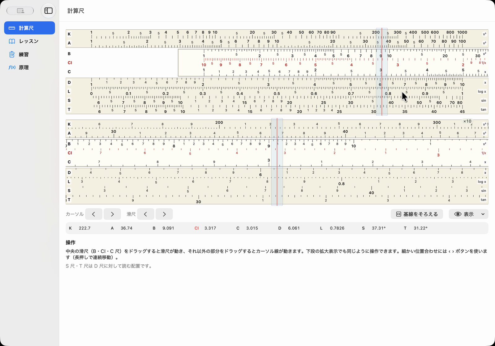
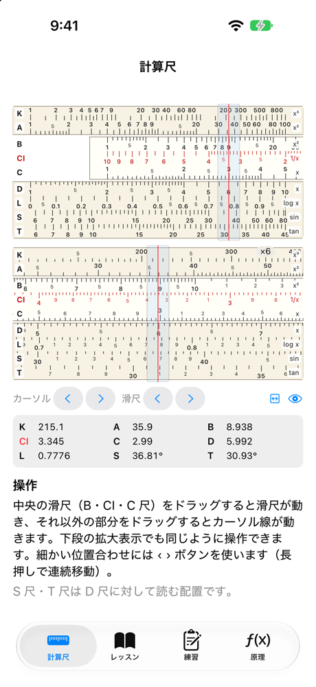
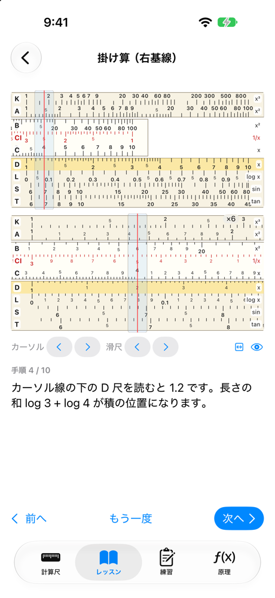
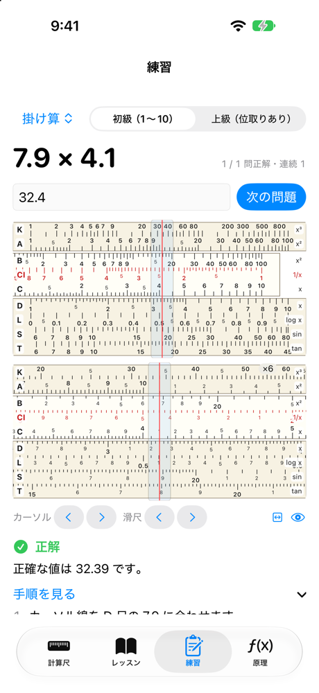
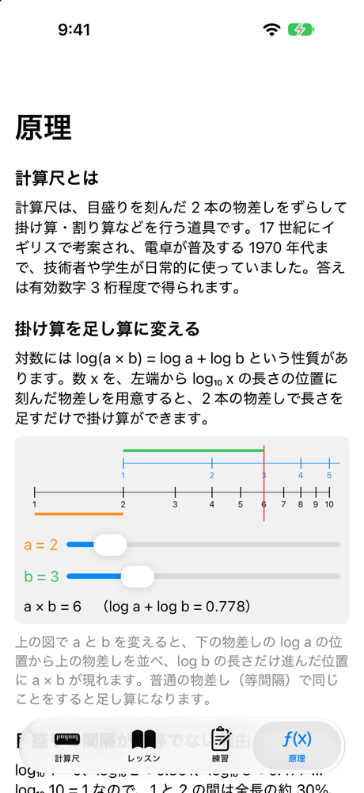

紹介動画（24 秒、音声あり）。画面は macOS 版を実際に操作して録画したものです。ナレーションは AI 音声（Gemini TTS）です。
ナレーションの文字起こし
- 3 かける 4 は、1.2。
- 計算尺では、これが正解です。
- 計算尺道場。計算尺を、Mac で学ぼう。
- 滑尺を動かして、目盛りを読む。
- レッスンでは、計算尺が自分で動きます。
- 練習は、小数点の位置まで採点。
- 掛け算は、長さの足し算。
- GitHub から、無料でダウンロード。
動かして、読んで、確かめる。
計算尺を「知っている」から「使える」にするために、動かせる計算尺、自動で動くレッスン、採点つきの練習、原理の解説を 1 つのアプリにまとめました。
9 本の尺を、ドラッグで動かす
K・A・B・CI・C・D・L・S・T 尺を備えた計算尺です。滑尺とカーソルをドラッグで動かし、拡大表示（×3〜×16）と微調整ボタンで細かく合わせます。カーソル線の下の値も表示できます。
計算尺が、手順どおりに動く
目盛りの読み方、掛け算（左基線・右基線）、割り算、逆数、2 乗と平方根、3 乗と立方根、常用対数、sin と tan、位取りの 9 レッスン。「次へ」で計算尺が次の状態に動き、注目する尺が光ります。
小数点の位置まで採点する
10 種類の問題を初級と上級（位取りあり）で出題します。誤差 0.5% 以内で正解。数字の並びは合っていて桁だけ違うときは「桁が違います」と教え、手順をタップすると計算尺がその状態に動きます。
掛け算が、長さの足し算になる理由
log(a × b) = log a + log b を、スライダーで動かせる図で説明します。尺の一覧、精度と有効数字、位取りの例もまとめています。
読み取り値をテストで確認
レッスンと練習問題のすべての手順で、カーソル線の下に正しい値が読めることをテストで確かめています（右基線、平方根の A 尺の左右、立方根の K 尺の区間を含む）。
Swift 製、MIT ライセンス
SwiftUI で iOS と macOS に対応。尺の計算・目盛り生成・採点は UI を含まないパッケージに分けています。macOS 版は Developer ID で署名し、Apple の公証を受けています。





iPhone / iPad 版はストアで配布していません。ソースからビルドして使えます。
掛け算を、長さの足し算に。
C 尺・D 尺は、数 x を左端から log₁₀ x の長さの位置に刻んでいます。滑尺をずらして長さ log a に log b をつなげると、合計の位置 log a + log b = log ab に積が現れます。
ブラウザで試す（C 尺と D 尺）
中央の滑尺をドラッグすると滑尺が、上下の固定尺をドラッグするとカーソル線が動きます。アプリと同じく、位置 x に 10x を刻んでいます。
尺の一覧
| 尺 | 位置 x に刻む値 | 主な用途 |
|---|---|---|
| C・D | 10x（1〜10） | 掛け算・割り算 |
| CI | 101−x | 逆数 |
| A・B | 102x（1〜100） | 2 乗・平方根 |
| K | 103x（1〜1000） | 3 乗・立方根 |
| L | x（0〜1） | 常用対数 |
| S | sin θ = 10x ÷ 10 | sin（5.74°〜90°） |
| T | tan θ = 10x ÷ 10 | tan（5.71°〜45°） |
位取り（小数点の位置）
計算尺が示すのは数字の並びだけです。数を「仮数 × 10 の累乗」に分け、仮数を計算尺で、10 の累乗を暗算で扱います。
- 0.032 × 450 を、3.2 × 10⁻² と 4.5 × 10² に分ける
- 計算尺で 3.2 × 4.5。右基線を使い、D 尺に 1.44 が読める
- 右基線を使ったので、仮数どうしの積は読みの 10 倍の 14.4
- 10⁻² × 10² = 10⁰ を掛けて、答えは 14.4
ダウンロードして、開くだけ。
macOS 版（公証済み）
- Releases から、最新の
SlideRule-x.y.z.zipをダウンロードする - 展開して、
SlideRule.appを開く。Developer ID で署名し、Apple の公証を受けているので、警告なしに開けます - サイドバーの「レッスン」から「目盛りの読み方」を始める
macOS 15 以降。Apple Silicon と Intel の Mac で動きます（ユニバーサル）。
ソースからビルド（iOS / macOS）
Xcode と XcodeGen が必要です。実機で動かすときは Local.xcconfig.example を Local.xcconfig にコピーして、自分のチーム ID を書きます。
# clone git clone https://github.com/Masakai/slide_rule.git cd slide_rule # Xcode プロジェクトを生成して開く brew install xcodegen xcodegen generate open SlideRule.xcodeproj # ロジックのテスト cd Packages/SlideRuleKit && swift test
知っておいてほしいこと
| S 尺・T 尺 | このアプリでは D 尺に対して読む配置です（D 尺の読み ÷ 10 が sin・tan）。実物の計算尺には、滑尺の裏側にあって C 尺に対して読む機種も多いので、手持ちの計算尺がある場合は説明書で確かめてください。 |
| 精度 | 計算尺で読めるのは有効数字 3 桁程度です。練習の採点は誤差 0.5% 以内を正解、1.5% 以内を「惜しい」としています。 |
| 対応環境 | 配布している公証済みのアプリは macOS 版だけです。iPhone / iPad 版はソースからビルドしてください。画面の文字は日本語だけです。 |
| 紹介動画 | 画面は macOS 版を操作して録画したもので、ナレーションは AI 音声（Gemini TTS）です。 |